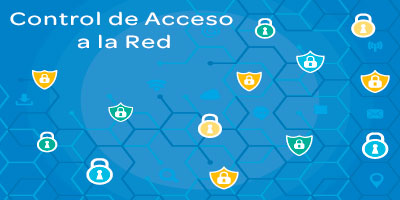

Los servicios de seguridad de la información de SECNAR están destinados a ayudar a las empresas a superar obstáculos permitiéndoles identificar, comprender y resolver problemas de seguridad de la información que pueden poner en riesgo a la organización y sus activos valiosos. Seleccione de nuestro conjunto integral de servicios de Seguridad de la información a continuación para obtener más información sobre cómo podemos ayudar a su organización a mitigar el riesgo, alcanzar los objetivos de cumplimiento, proteger los activos de datos y cumplir con los estándares de la industria.
Nuestras evaluaciones permiten a nuestros clientes tomar decisiones informadas sobre el riesgo para sus sistemas y qué modificaciones relevantes para la seguridad pueden ser necesarias para una implementación segura. Usando herramientas profesionales y experiencia única con análisis estático, fuzzing y pruebas concolicas (si es posible), servimos como un adversario conocedor y dedicado para identificar las vulnerabilidades que de otro modo pasarán sin ser detectadas. Nuestras evaluaciones proporcionan una estimación de la postura general de seguridad y la dificultad de compromiso de un atacante externo. Identificamos los riesgos a nivel de diseño y los defectos de implementación que ilustran los riesgos sistémicos. Al final de cada evaluación, brindamos recomendaciones sobre las mejores prácticas que podrían mejorar la resistencia al ataque y educamos a los equipos de seguridad internos sobre fallas de seguridad comunes y novedosas técnicas de prueba. Siempre que sea posible, entregamos herramientas de ingeniería de seguridad específicas de la aplicación que incorporan los resultados de nuestras evaluaciones.
Auditorías de Seguridad y TI
La seguridad cibernética no es únicamente un problema de TI. Es un desafío multifacético que requiere un enfoque de toda la empresa para su gestión. La protección total contra las amenazas cibernéticas es inalcanzable. Más bien, una mejor práctica es un enfoque basado en el riesgo que implementa una estrategia integral para evitar deliberadamente, mitigar, aceptar o transferir los riesgos que plantean las amenazas cibernéticas. Las empresas deben establecer y mantener un marco apropiado de gobernanza y gestión de riesgos para identificar y abordar los riesgos de las redes y servicios de comunicaciones.
Control de Acceso a la Red
La seguridad cibernética no es únicamente un problema de TI. Es un desafío multifacético que requiere un enfoque de toda la empresa para su gestión. La protección total contra las amenazas cibernéticas es inalcanzable. Más bien, una mejor práctica es un enfoque basado en el riesgo que implementa una estrategia integral para evitar deliberadamente, mitigar, aceptar o transferir los riesgos que plantean las amenazas cibernéticas. Las empresas deben establecer y mantener un marco apropiado de gobernanza y gestión de riesgos para identificar y abordar los riesgos de las redes y servicios de comunicaciones.
Manejo de Vulnerabilidades
La seguridad cibernética no es únicamente un problema de TI. Es un desafío multifacético que requiere un enfoque de toda la empresa para su gestión. La protección total contra las amenazas cibernéticas es inalcanzable. Más bien, una mejor práctica es un enfoque basado en el riesgo que implementa una estrategia integral para evitar deliberadamente, mitigar, aceptar o transferir los riesgos que plantean las amenazas cibernéticas. Las empresas deben establecer y mantener un marco apropiado de gobernanza y gestión de riesgos para identificar y abordar los riesgos de las redes y servicios de comunicaciones.
Capacitaciones Personalizadas

La seguridad cibernética no es únicamente un problema de TI. Es un desafío multifacético que requiere un enfoque de toda la empresa para su gestión. La protección total contra las amenazas cibernéticas es inalcanzable. Más bien, una mejor práctica es un enfoque basado en el riesgo que implementa una estrategia integral para evitar deliberadamente, mitigar, aceptar o transferir los riesgos que plantean las amenazas cibernéticas. Las empresas deben establecer y mantener un marco apropiado de gobernanza y gestión de riesgos para identificar y abordar los riesgos de las redes y servicios de comunicaciones.